第1回：Claude Code の基本
「目標：Claude Code の基本操作・コマンド体系を理解し、日常業務で利用できるようになる」
1到達目標・時間配分
到達目標
- Claude Code の基本設定を理解する
- 主要なスラッシュコマンド・特殊プレフィックス・キーボードショートカットを使える
- 既存リポジトリに対して、構造把握 → 該当箇所の特定 → 質問 → サマリ取得の一連を回せる
時間配分（90分）
| # | 内容（約1.5時間・手を動かしながら進めます） | 時間 |
|---|---|---|
| 1 | オープニング | 4分 |
| 2 | Claude Code とは？ | 12分 |
| 3 | 基本的な使い方 | 19分 |
| 4 | Claude Code の設定ファイル | 5分 |
| 5 | Claude Code を使ってみよう！ | 6分 |
| 6 | コマンド | 10分 |
| 7 | 実践：ソースコードの解析 | 15分 |
| 8 | まとめ | 4分 |
| 9 | 質疑応答 | 15分 |
2Claude Code とは？（12分）
2-1. Claude Code（3分）
- Anthropic が提供する エージェント型コーディングツール
- CLI（ターミナル）/ VS Code / JetBrains / Claude Desktop / Web (
claude.ai/code) の 5つの入口 がある - 本コースでは CLI（ターミナル） を中心に扱う
2-2. Claude.ai との違い（2分）
| 観点 | Claude.ai（チャット） | Claude Code（AIエージェント） |
|---|---|---|
| ファイルアクセス | コピペで渡した範囲のみ | ローカルファイルに直接アクセス |
| 実行 | テキスト返答のみ | ファイル編集・コマンド実行を自分で行う |
| ループ | 人間が結果を貼り戻す | 自分でエラーを読み、自分で直す |
| 必要な仕組み | ─ | 承認モデル（ハーネス） |
2-3. AIエージェントの動き（4分）
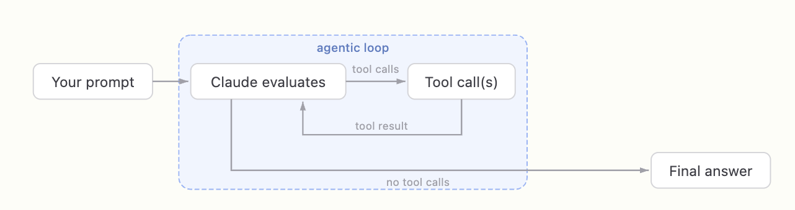
- プロンプトを受け取る。 ユーザの入力に加えて、Claude Code が用意する指示（システムプロンプト）・使えるツールの一覧・これまでの会話履歴をまとめて受け取る。
- 評価して応答する。 Claude が今の状況を見て、どう進めるか決める。テキストで答える／ツールを使う（ファイル読込・編集・コマンド実行など）／その両方、のいずれか。
- ツールを実行する。 要求されたツールを実行し、結果を Claude に返す。この結果が次の判断材料になる。Hooks を使えば、ツールの実行を 実行前に止めたり書き換えたり できる（第2回）。
- 繰り返す。 ステップ 2 と 3 を繰り返す。この 1 サイクルが 1 ターン。ツールを使わずに答えだけ返せる状態になるまで続く。
- 結果を返す。 最終的な回答テキストを返し、その作業で使った トークン量・コスト・セッション ID も確認できる（
/usageや/statusで見られる）。
2-4. 用語説明（3分）
セッション
claudeの起動から終了までの 1つの対話単位。会話履歴（コンテキスト）はセッションごとに保持される- 終了しても履歴は残っており、
claude --continue（直前）やclaude -r（一覧から選択）で再開できる - セッションが変わるとコンテキストはまっさらになる — 1タスク1セッション が使い方の基本
モデル
ここでは Large Language Model (LLM) を指す。Anthropic 社が提供するモデルファミリー：
| モデル | 特徴 |
|---|---|
| Fable | 最上位。最も難しい推論・長時間の自律的なエージェント作業向け |
| Opus | 高性能。複雑な設計判断・大規模なリファクタリング向け |
| Sonnet | 性能と速度のバランス型。日常的な開発タスクの主力 |
| Haiku | 最速・低コスト。簡単な質問や定型作業向け |
コンテキスト
- 会話・ファイル内容・コマンド出力すべてが コンテキストウィンドウ に積まれる
- 上限に近づくと 自動コンパクション（要約圧縮）が走る — 情報のロスを伴う
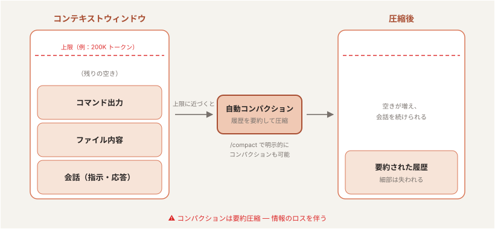
トークン
- LLM が文章を処理する 最小単位（英語は約4文字 ≒ 1トークン、日本語は1〜2文字 ≒ 1トークン）
- コンテキストウィンドウの上限はトークン数で決まる（例：200K トークン）
- 利用量（レートリミット）も入出力のトークン数で計算される —
/usageで確認できるのはこれ
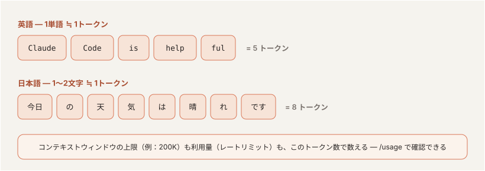
参考: トークン分割を体験できるツール（OpenAI Tokenizer） — platform.openai.com/tokenizer
ハーネス
- モデル（LLM）を実用的なエージェントとして動かすための 周辺機構の総称
- ツール実行・パーミッション管理・コンテキスト管理（コンパクション）・セッション管理などを担う
- Claude Code = モデル + ハーネス。同じモデルでもハーネスの出来でエージェントの性能は大きく変わる
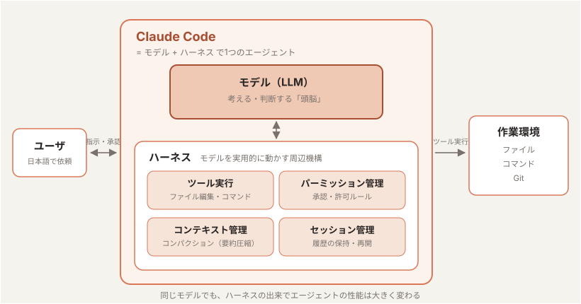
3基本的な使い方（19分）
3-1. インストール（4分）
macOS / Linux / WSL
# 推奨: 公式インストーラ（auto-update 対応） $ curl -fsSL https://claude.ai/install.sh | bash # 代替: Homebrew（auto-update なし） $ brew install --cask claude-code
Windows
# PowerShell（推奨） > Invoke-RestMethod https://claude.ai/install.ps1 | Invoke-Expression # CMD > curl -fsSL https://claude.ai/install.cmd -o install.cmd && install.cmd
コマンドを使わず、claude.com/ja/download からインストーラをダウンロードしてインストールすることもできる。
claude コマンド（CLI）は使えない。PowerShell で Invoke-RestMethod https://claude.ai/install.ps1 | Invoke-Expression を実行して CLI をインストールし、実行後に「システムの詳細設定の表示」→「詳細設定」→「環境変数」→「〇〇のユーザー環境変数」の Path に、インストールされたパスを登録する。
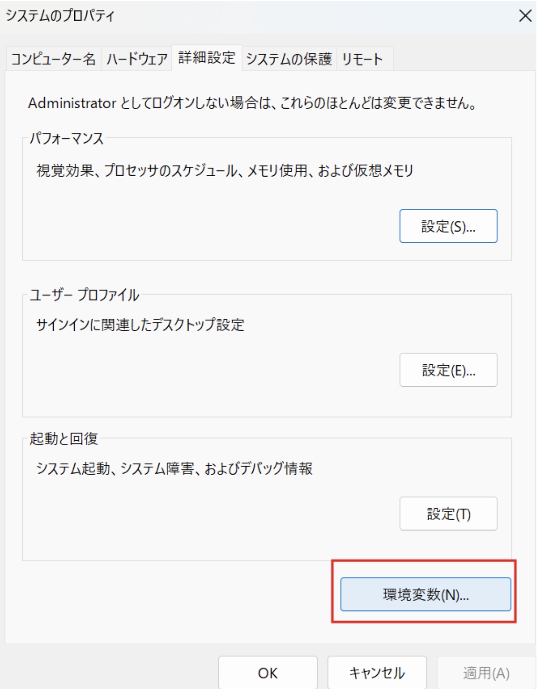
Path にインストール先を登録brew install ghWindows では winget でインストールできる:
winget install --id GitHub.cliインストールと設定（
gh auth login など）の参考: Qiita — GitHub CLI（gh）のインストールと設定
動作確認
$ cd <あなたのプロジェクト> $ claude
- テーマ選択 → サインイン方法選択（Claude Pro/Max/Enterprise / API キー / Bedrock 等）
- 起動ディレクトリ配下に すべてアクセスできる → 機密ディレクトリでは起動しない
起動に成功すると、以下のようなウェルカム画面が表示される。
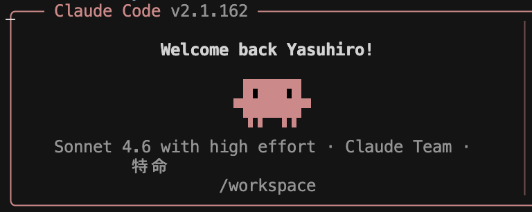
新しいフォルダで初めて起動すると、そのフォルダを信頼するか の確認が表示される。
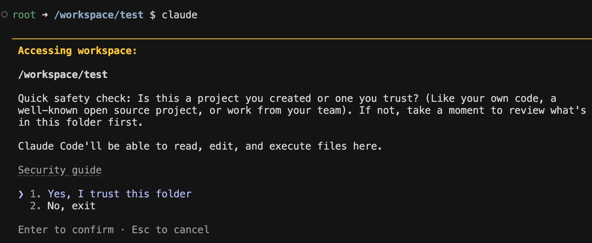
- Claude Code は起動ディレクトリ配下を 読み取り・編集・コマンド実行 できる。そのための起動時にユーザに確認を行います（ハーネス機能）
- 自分が作った／信頼できるプロジェクト（自分のコード・有名な OSS・チームの成果物）なら
1. Yes, I trust this folder - 心当たりのないフォルダなら、中身を確認するまでは
2. No, exitで抜ける
3-2. 起動・終了・再開（3分）
| 操作 | 方法 |
|---|---|
| 起動 | プロジェクト直下で claude |
| 終了 | Ctrl + C を 2 回 / /exit |
| 直前の続きから再開 | claude --continue |
| 過去のセッションを選んで再開 | claude -r（--resume） |
| セッションに名前を付ける | claude -n <name>（--name <name>） |
| 非対話で 1 問だけ | claude -p "..." |
パーミッションスキップ（上級者向け）
| オプション | 挙動 |
|---|---|
--dangerously-skip-permissions | すべてのパーミッション確認をスキップして実行する |
--allow-dangerously-skip-permissions | スキップを既定では無効のまま、セッション中に選択できるようにする |
3-3. スラッシュコマンド（9分）
まず最初に実施しておきたいコマンドを順に紹介する。
/status — セッション状態の確認
バージョン・サインイン情報・使用モデル・MCP サーバの状態など、現在のセッションの全体像を一覧表示する。「いま自分がどの環境・どのモデルで動いているか」を最初に確認する習慣をつける。
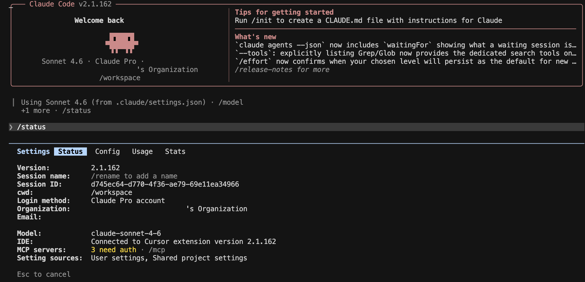
/config — 設定の確認・変更
Auto-compact / Thinking mode / 既定のパーミッションモードなど、Claude Code の動作設定を対話的に確認・変更できる。
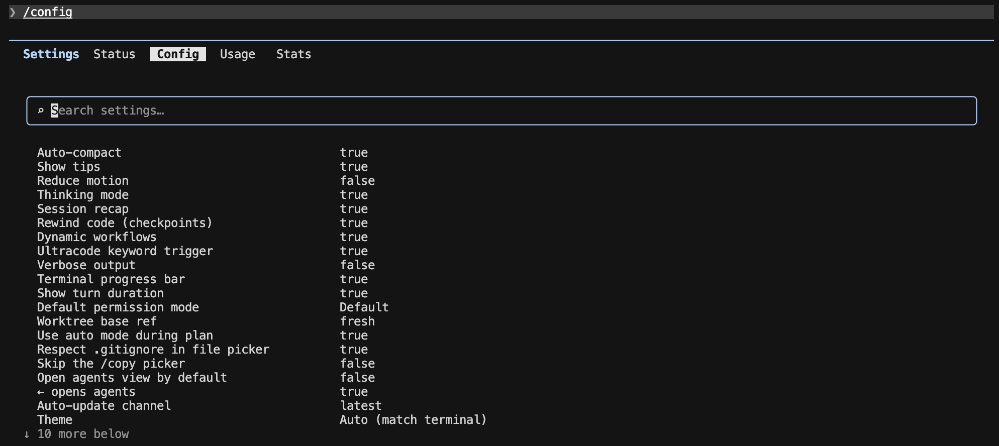
設定項目の Language を変更すると、Claude Code の出力言語を日本語にできる。
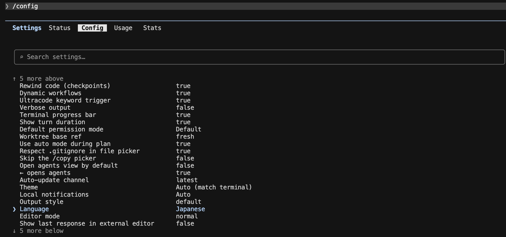
/usage — 利用量の確認
現在のセッション・週単位の利用量（レートリミットの消費状況）を確認できる。リセット時刻も表示されるので、長時間の作業前にチェックすると安心。
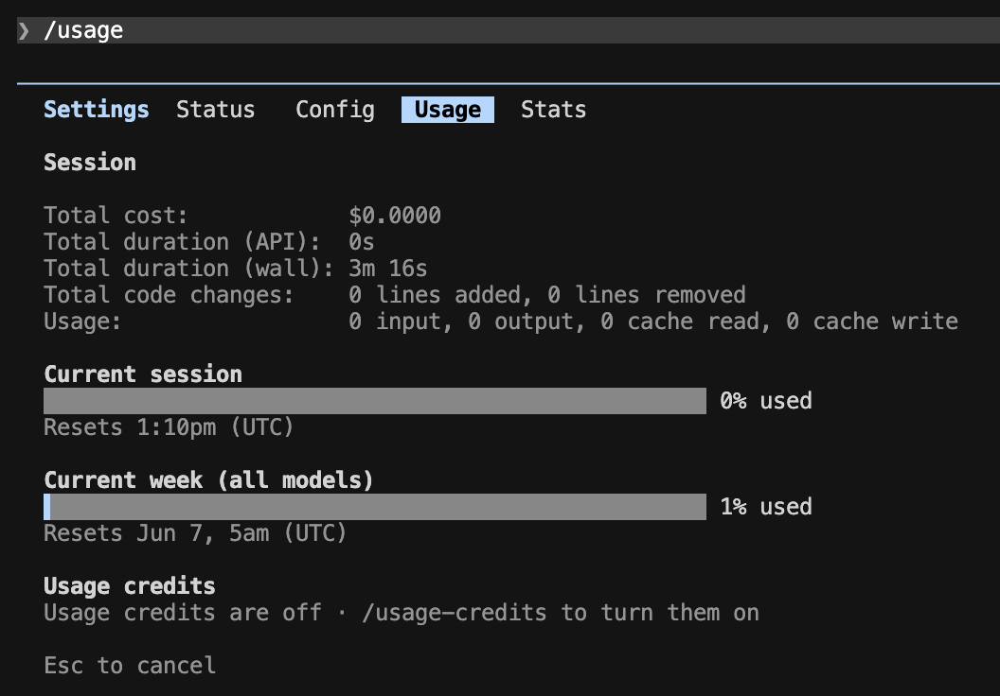
/model — モデルの切り替え
用途に応じてモデルを切り替える。日常タスクは Sonnet、素早い回答が欲しいときは Haiku、といった使い分けができる。
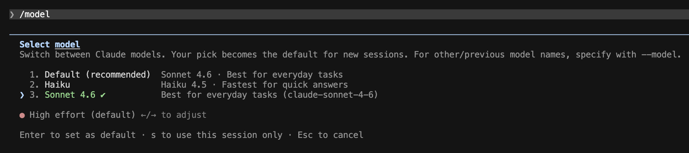
/effort — 思考の深さの調整
low 〜 max の5段階で「速さ ⇔ 賢さ」のトレードオフを調整する。簡単な質問は低く、難しい設計判断は高く。
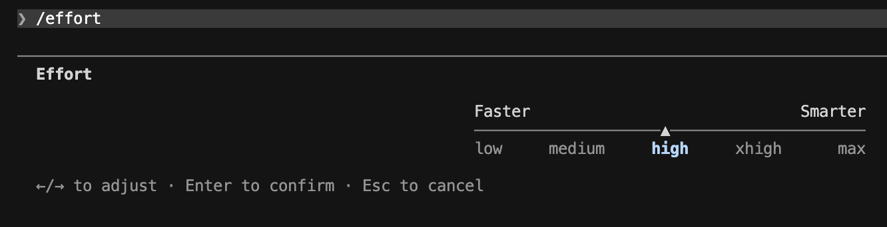
/init — CLAUDE.md の生成
リポジトリ全体を解析して、プロジェクトメモリ（CLAUDE.md）を自動生成する。プロジェクトで最初に一度実行しておくと、以後のセッションで Claude がプロジェクトの構造・規約を踏まえて動くようになる。
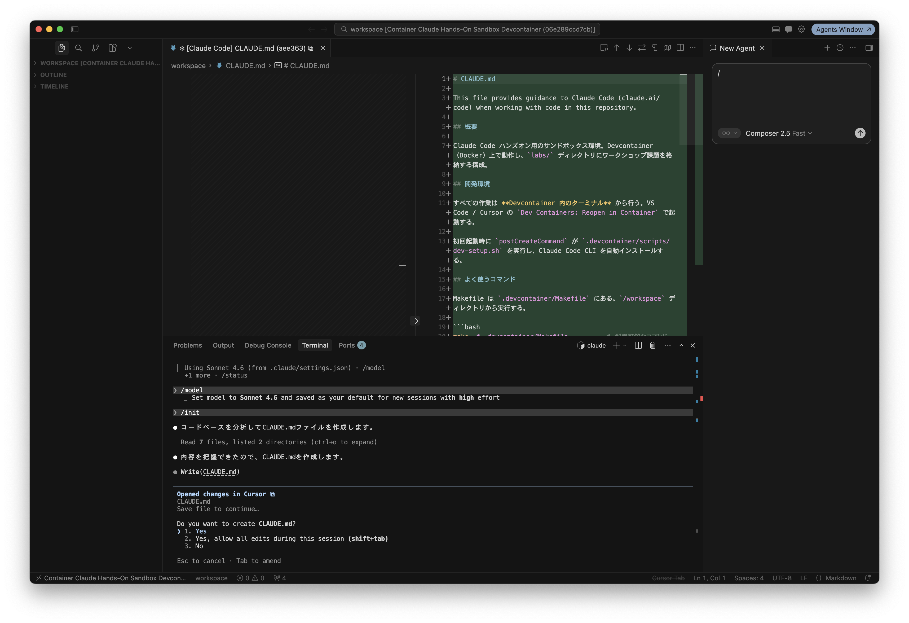
生成された CLAUDE.md は、claude を起動したディレクトリ（プロジェクトルート）直下 に作成される。
<プロジェクトルート>/
├── CLAUDE.md ← ここに作成される
├── app/
├── routes/
└── ...
その他の基本コマンド
| コマンド | 説明 |
|---|---|
/help | コマンド一覧 |
/exit | セッション終了 |
/privacy-settings を実行して設定を確認しておくとよい。ここで 会話データをモデルの学習（トレーニング）に使わせないようにオプトアウト できる。業務コードを扱うなら、まずこの設定を見直しておくと安心。
- 学習をオフにすると、データ保持期間も短くなる
- ウェブからも変更可能：
https://claude.ai/settings/data-privacy-controls
紹介したコマンドを実際に実行して、自分の環境を確認・整備する。
- プロジェクト直下で
claudeを起動する /statusでバージョン・サインイン状態・使用モデルを確認する/configでLanguageをJapaneseに変更する/usageで現在の利用量とリセット時刻を確認する/modelと/effortで現在の設定を確認する（変更してもよい）/initを実行してCLAUDE.mdを生成し、どんな内容が書かれたか眺めてみる
3-4. 承認モードと Plan Mode（3分）
| モード | ステータスバー表示 | 挙動 |
|---|---|---|
| Default | （表示なし）? for shortcuts | 標準動作。各ツールの初回使用時に承認を求める |
| Accept Edits | ▶▶ accept edits on | ファイル編集と一般的なファイル操作（mkdir mv cp 等）は自動承認、それ以外のコマンドは承認 |
| Plan Mode | ⏸ plan mode on | 読み取り専用 ツールだけで計画を立てる（編集しない） |
| Auto | ▶▶ auto mode on | 安全チェック付きでツール呼び出しを 自動承認（研究プレビュー） |
Shift + Tab で上記4つを循環切り替え。
使い分けの目安
- 新規領域・本番リポジトリ → Default
- テストが厚い既存領域 → Accept Edits
- 下調べ・計画したいだけ → Plan Mode（ファイル編集しない）
- 隔離されたサンドボックスで全部任せたい → Auto
Shift + Tabで上記4つのモードを切り替えてみましょう。
4Claude Code の設定ファイル（5分）
Claude Code の挙動は、階層化された設定ファイルで制御される。「どこに置くか」でスコープが変わるのがポイント。
4-1. CLAUDE.md — プロジェクトメモリ（2分）
セッション開始時に 自動で読み込まれる「Claude への指示書」。/init で雛形を生成でき（3-3 参照）、# プレフィックスで追記できる。
| 配置場所 | スコープ |
|---|---|
~/.claude/CLAUDE.md | 全プロジェクト共通（個人の指示） |
<repo>/CLAUDE.md | プロジェクト共通（チームで共有） |
<repo>/CLAUDE.local.md | プロジェクト個人用（git 管理外） |
4-2. settings.json（3分）
パーミッション許可リスト・Hooks・環境変数など、ハーネスの動作設定 を JSON で定義する。
| 配置場所 | スコープ |
|---|---|
~/.claude/settings.json | ユーザ共通（全プロジェクトに適用） |
<repo>/.claude/settings.json | プロジェクト共通（チームで共有・コミット対象） |
<repo>/.claude/settings.local.json | プロジェクト個人用（git 管理外） |
settings.json と CLAUDE.md の使い分け
| 観点 | settings.json | CLAUDE.md |
|---|---|---|
| 形式 | JSON | Markdown（自然言語） |
| 役割 | ハーネスの動作設定（許可・Hooks・環境変数） | Claude への指示・プロジェクト知識 |
参考リンク
5Claude Code を使ってみよう！（6分）
ここまでの内容を使って、実際に Claude Code でアプリを1本作ってみる。題材はシェルスクリプトの「Hello world」。承認モードは Default モードにしておく。
5-1. 起動して依頼する（2分）
空のディレクトリを作って claude を起動し、自然言語で依頼する。
$ mkdir hello-world && cd hello-world $ claude
「Hello world」と表示するシェルスクリプトを作って
5-2. 承認して作らせる（2分）
- Claude がファイル作成の承認を求めてくる → 内容を確認して承認（Default モードの承認フロー を体験）
- 作成されたファイル（例：
hello.sh）の中身を確認する
5-3. 実行して確認する（2分）
作ったアプリを実行して、結果を見せて
実行前に、以下のような 承認ダイアログ が表示される。
Bash command bash hello-world/hello.sh Run hello.sh to verify output This command requires approval Do you want to proceed? ❯ 1. Yes 2. Yes, and don't ask again for: bash * 3. No
- 何のコマンドが・何のために 実行されるかが表示される — 内容を確認してから
1. Yesで許可する 2. Yes, and don't ask again for: bash *を選ぶと、以後bashコマンドは確認なしで実行される（許可リストに追加される）- 心当たりのないコマンドなら
3. Noで拒否できる — これが第2章で学んだ 承認モデル（ハーネス） の実物
$ bash hello.sh
Hello world
- Claude が
bash hello.shを実行し、Hello worldが表示されることを確認する - 依頼 → 作成 → 実行 → 確認 — 第2章で学んだエージェントループの一周を最小サイズで体験できた
✻ Pondering… (12s · ↓ 1.2k tokens · esc to interrupt)
- 先頭の単語（Pondering, Brewing, Vibing…）は ランダムな遊び言葉 で、処理内容とは関係ない
- 経過時間 と 消費トークン数 が確認できる
esc to interrupt—Escでいつでも割り込んで 指示し直せる（第2章「ループの途中で割り込み」の実物）
2: Fine で OK（0: Dismiss で閉じてもよい）。
● How is Claude doing this session? (optional) 1: Bad 2: Fine 3: Good 0: Dismiss
6コマンド（10分）
6-1. 体系 — 3 種類（4分）
| 種類 | 入り方 | 例 |
|---|---|---|
| スラッシュコマンド | REPL 内で / を入力 | /init, /context, /mcp |
| 特殊プレフィックス | プロンプト先頭で @, !, # | @README.md, !ls, # メモ |
| キーボードショートカット | キー操作 | Shift+Tab, Esc, Ctrl+R |
6-2. 特殊プレフィックス（3分）
! — Bash 実行モード
!pwd
- プロンプトとして送らず シェルだけ実行。手元の状態を Claude に渡したいときに便利。
# — メモリ追記
# このプロジェクトのテストは bats tests/ で実行する
- セッション内メモリに追記される。
/memoryで管理。
@ — ファイル / ディレクトリ参照
@README.md このプロジェクトの概要を3行でまとめて
- 該当ファイルを 明示的に読ませる。曖昧さが減ってコンテキストも節約。
6-3. キーボードショートカット（3分）
| キー | 動作 |
|---|---|
Shift + Tab | パーミッションモード循環 |
Ctrl + C | 入力クリア / 2回でセッション中断 |
Esc | 入力クリア・ループ中なら割り込み |
Ctrl + R | 履歴検索 |
Up / Down | 履歴ナビゲーション |
7実践：ソースコードの解析（15分）
※ 普段、開発業務を行わない方は「付録：Web 記事を html形式でのプレゼン資料にする」を実施してください。
題材は agmsg — Claude Code・Codex・Gemini CLI などの CLI AI エージェント同士が、共有の SQLite データベースを介してメッセージを交換できるようにする OSS（Bash + SQLite 製）。まず GitHub からクローンして準備する:
$ git clone https://github.com/fujibee/agmsg $ cd agmsg
「構造把握 → 該当箇所の特定 → 深掘り質問 → サマリ取得」の一連の流れを体験する。
Shift + Tab で Plan Mode にしておくと安全（読み取り専用ツールしか使わない）。
7-1. 構造把握（4分）
プロジェクト直下で claude を起動し、まず全体像を聞く。
このリポジトリの全体構造と技術スタックを教えて。ディレクトリごとの役割も簡潔にまとめて。
- Claude が
README.mdやARCHITECTURE.md、scripts/を自分で読んで回答することを観察する - 何のファイルを読んだか がツール実行ログに出る — エージェントループの実物
7-2. 該当箇所の特定（4分）
機能から逆引きで実装箇所を特定させる。
エージェントがメッセージを送信したとき、どのスクリプトが実行され、どこで SQLite データベースに書き込まれるか、該当ファイルと行を特定して。
scripts/send.sh→ SQLite への書き込み、と追跡されることを確認- grep 相当の探索を Claude が自律的に行う様子を観察する
7-3. 深掘り質問（4分）
@ プレフィックスで対象を明示して、ピンポイントに聞く。
@scripts/send.sh
このスクリプトがメッセージをどのように保存しているか、複数エージェントが同時に書き込んだ場合の考慮も含めて説明して。
@でファイルを渡すと 曖昧さが減り、探索分のコンテキストも節約 できる
7-4. サマリ取得（3分）
- Plan Mode の解除（書き込み許可）を承認すると、Claude がシーケンス図を Markdown ファイルとして保存する
最後に、解析結果をドキュメントとして残せる形で出力させる。
あるエージェントがメッセージを送信してから、別のエージェントが受信するまでの流れを Mermaid のシーケンス図で出力して。
続けて、生成した図をファイルとして残す。Plan Mode は解除しておく:
シーケンス図をファイルに保存して
上記の内容（7-1 〜 7-4）を実施したら、自分の GitHub アカウントでリポジトリを新規に作成して、できあがったファイルを登録しましょう。gh コマンドがインストールされている場合は、以下のように Claude Code に指定することで新規リポジトリを作成可能です。
ghコマンドを使って、私のGitHubアカウントに agmsg-analysis という新しいリポジトリを作成して、保存したシーケンス図のファイルを登録して
✓まとめ（4分）
第1回の振り返り
| 章 | 学んだこと |
|---|---|
| 2 | Claude Code は エージェント型 — コンテキスト収集 → ツール実行 → 検証のループを自走する。基本用語（モデル / コンテキスト / トークン / ハーネス / セッション） |
| 3 | 起動・終了・再開（--continue -r）、最初に実行するスラッシュコマンド（/status /config /usage /model /effort /init）、4つの承認モード |
| 4 | 設定ファイルの階層 — settings.json（ハーネスの動作設定）と CLAUDE.md（Claude への指示） |
| 5 | 自然言語の依頼だけで Hello world アプリを作成 — 依頼 → 作成 → 実行 → 確認のループを体験 |
| 6 | コマンド体系と特殊プレフィックス — @（ファイル参照）・!（シェル実行）・#（メモリ追記） |
| 7 | ソースコード解析の型 — 構造把握 → 該当箇所の特定 → 深掘り → サマリ取得 |
claude を起動 → /init → 「このリポジトリの全体構造を教えて」。調査・解析タスクから任せ始める のが、リスクなく Claude Code に慣れる近道。
💬質疑応答（15分）
ここまでの内容についての質問・疑問に答える。日常業務での適用イメージ（どのタスクから Claude Code に任せるか）もここで相談する。
付付録：Web 記事を html形式でのプレゼン資料にする
ソフトウェア開発以外の業務でも Claude Code は活用できる。例えば「Webサイトを調べる → 内容を纏める → 資料にする」の流れをそのまま任せられる。ここでは Web の記事を題材に、日本語の html形式でのプレゼン資料を作成し、さらにデザインテンプレートの画像を与えて見た目を更新するまでを体験する。
題材の記事（英語。自分で検索して見つけた別の記事でもよい）:
claude.com/blog/getting-started-with-loops
付録-1. Web 記事を日本語の html形式でのプレゼン資料にする
資料作成用の空フォルダを作って Claude Code を起動する:
$ mkdir article-report $ cd article-report $ claude
記事の URL を渡して、日本語の資料化を依頼する:
https://claude.com/blog/getting-started-with-loops の記事を読んで、内容を日本語でわかりやすくまとめた html形式でのプレゼン資料を loops-guide.html という1ファイルで作成してください。開発者でない人にも伝わる表現にしてください。
- Web への取得アクセスの承認を求められたら、内容を確認して許可する
- 記事が英語でも、日本語でと指示すれば日本語の資料 になる
完成したらブラウザで開いて確認する（! プレフィックスで Claude Code からそのまま実行できる）:
!open loops-guide.html
Windows の場合は !start loops-guide.html。
付録-2. デザインテンプレートを与えて見た目を更新する
好みのデザイン（社内の資料テンプレート・気に入っている Web サイトなど）のスクリーンショットを撮り、作業フォルダに design-template.png として保存する。
画像を渡してデザインの更新を依頼する:
design-template.png のデザイン（配色・フォント・レイアウトの雰囲気）に合わせて、loops-guide.html の見た目を更新してください。文章の内容は変えないでください。
- 画像はターミナルへの ドラッグ＆ドロップ でパスを渡すこともできる
- 仕上がりが気に入らなければ「余白をもう少し広く」「見出しの色を控えめに」のように 会話で微調整 する
付録-3. PDF 化して配布できるようにする
資料を配布・印刷しやすいよう、仕上げに PDF へ変換する:
loops-guide.html を A4 縦の PDF に変換して、loops-guide.pdf として保存してください。
- Claude が PC にインストール済みのツール（Chrome のヘッドレス印刷など）を探して変換してくれる。使えるツールが無い場合は、代替手順（ブラウザで開いて「印刷 → PDF に保存」）を案内してくれる
- 出来上がったら
!open loops-guide.pdfで確認する（Windows は!start loops-guide.pdf） - 「見出しの途中で改ページしないようにして」「余白を広めに」のような 印刷向けの微調整も会話で 頼める